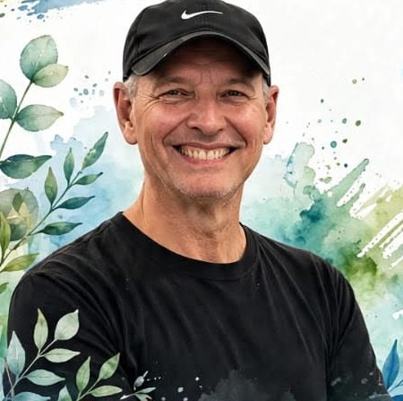

Entrada gratuita
Evento de Saúde & Bem-Estar
Exercício físico é saúde, é vida
Venha cuidar da sua saúde com a família e os amigos, em um encontro aberto ao público, com convidado especial e sorteio de brindes.
- 31 de outubro
- 16h30
- Galo Branco, São José dos Campos/SP
Toque no cartaz para ampliar
Um encontro para cuidar do corpo e da mente
O Evento de Saúde & Bem-Estar tem como propósito incentivar hábitos saudáveis e valorizar o cuidado com a saúde física e o bem-estar.
É um convite aberto a todos: venha com a família, chame os amigos e aproveite um momento de aprendizado e convivência, organizado pela Igreja Adventista do Sétimo Dia em São José dos Campos.
Tema desta edição
Exercício Físico
é Saúde,
é Vida
Movimentar o corpo faz parte do cuidado diário com a saúde e pode contribuir para a disposição e o bem-estar.
-
Benefícios para corpo e mente
A atividade física é uma aliada do cuidado com o corpo e também com o bem-estar do dia a dia.
-
Movimento, disposição e bem-estar
Movimento e energia caminham juntos: quem se movimenta costuma sentir mais disposição.
-
Hábitos que fazem diferença
Pequenas escolhas, repetidas todos os dias, ajudam a construir uma vida mais saudável.
Conteúdo informativo. Antes de iniciar qualquer atividade física, converse com um profissional de saúde.

Convidado especial
Prof. Mário
Educação Física
O Prof. Mário, de Educação Física, é o convidado especial desta edição do evento, que tem como tema “Exercício Físico é Saúde, é Vida”.
Venha conhecer o convidado e participar de um encontro pensado para incentivar o cuidado com a saúde.
Hidratação: um cuidado de todo dia
Manter-se hidratado faz parte dos hábitos saudáveis e ajuda a ter mais energia ao longo do dia.
- Tenha sempre uma garrafinha de água por perto.
- Beba água ao longo do dia, e não só quando a sede aparecer.
- Combine água, movimento e boas escolhas no dia a dia.
A necessidade de água varia de pessoa para pessoa. Em caso de dúvida, procure um profissional de saúde.
Sorteio de brindes
Haverá sorteio de brindes nesta edição. Venha viver o encontro com a gente!
Para saber mais sobre o sorteio, consulte o Instagram oficial ou a organização do evento.
Informações práticas
- Data
- 31 de outubro
- Horário
- 16h30
- Local
- Igreja Adventista do Sétimo Dia
- Endereço
- Av. Antônio Ferreira Vinhas, 1173
Galo Branco — São José dos Campos/SP - Entrada
- Gratuita
- Público
- Evento aberto ao público
Os botões de mapa fazem uma busca pelo endereço informado. Confira o local no mapa antes de sair.
Cuide de você. Movimente‑se. Venha viver esse momento com a gente!
Chame a família, os amigos e os vizinhos. A entrada é gratuita e o evento é aberto ao público.